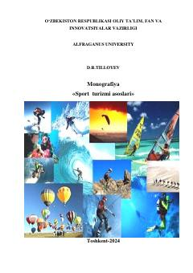

STSport va sog'lomlashtirish turizmining nazariy va amaliy asoslari bo'yicha o'quv qo'llanma.
Ushbu monografiyada sport va sog'lomlashtirish turizmining nazariy hamda uslubiy asoslari yoritilgan. Qo'llanma talabalarga sayohatlarni tashkil etish, marshrutlarni ishlab chiqish va turistik tadbirlarni o'tkazish bo'yicha zarur bilim va ko'nikmalarni berishga qaratilgan.